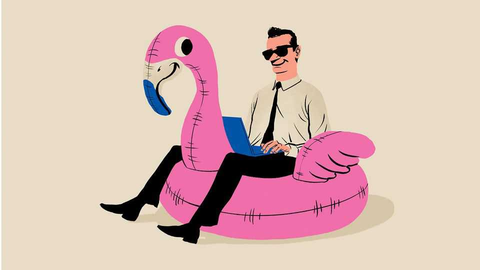

The six stages of holiday-making
Two weeks off, but how many days of relaxation?

Aug 13th 2026
It’s summer, in the northern hemisphere at least, which means emptier offices and fuller airports. In theory, a holiday is a time to properly relax. In practice, there are several stages to pass through before that moment arrives, and several more to experience before you are fully immersed in work again.
The preparation phase. You badly need a holiday. In your final couple of days before leaving, you complete your most urgent tasks, like tidying your desk. You tell people on your team that you trust them completely and in the same breath, that they should contact you if anything comes up, no matter how trivial. As a result, they don’t feel trusted at all. You think about setting up an out-of-office message and decide not to: it’s really not a problem to check your phone occasionally. As you leave the office, you think you feel a cold coming on.
The relax-like-hell phase. You spend the first few days approaching the holiday like it’s work. You spend loads of time asking AI models for places to go that are off the beaten track. In a typical morning, you drive two hours to eat breakfast at a place recommended by ChatGPT which turns out to be closed, and then visit a museum devoted to the ancient craft of curing fish.
At lunch, you drink wine and then fall asleep. You think of this period of unconsciousness as time that could have been spent relaxing. You are acutely aware of time passing, your days of freedom slipping away. You pick up a book and instead of reading it, worry that you could be enjoying your leisure in even more leisurely ways. You feel very tense for someone on holiday.
The letting-go phase. Meanwhile, you check your email every so often, and intervene in things you don’t need to. You get a couple of WhatsApp messages and are asked to join a call, and feel both irritated and pleased. Can’t you do it without me? You can’t do it without me! As you triage messages, sorting them into things that have to be dealt with quickly and those that can wait, you gradually realise just how much of what goes on each week a) doesn’t require you at all and b) has no lasting value. You start to ignore most messages; if it’s important, they will find a way to contact you. You switch on your out-of-office message.
The delusional phase. Finally, you start to relax. You lie in a little longer. You don’t look at your phone quite as much. You realise that back in the office the weekly sales meeting is happening right at this very minute, and you laugh out loud at the smallness of your old life. Fairly soon, you start to lose your grip on reality. You think about moving to wherever it is you are, forgetting that you are enjoying yourself because the weather is nice and you are not working. You start trying to figure out how soon you can retire. You fantasise about working outdoors, perhaps in sea-kayaking or doing something artisanal to a dry-stone wall.
The motivated phase. The end of the holiday is fast approaching. You realise that sea-kayaking gives you blisters and that the things you are best equipped to do don’t involve dry-stone walls. You start to look at emails again, but only the ones that matter. You feel motivated to return. You have seen how much time is spent on unimportant things and are determined to prioritise much more ruthlessly. You have some really good ideas about how to improve the weekly sales meeting.
The recidivism phase. You return to the office full of vim. You look and feel healthier than your colleagues. Then you have the same conversation 800 times. “How was your holiday?” “Wonderful.” “Where did you go?” [Insert answer.] “What did you do there?” [Insert details.] You soon realise that no one is interested in where you went and start to make up responses. “Where did you go?” “Wakanda.” “What did you do?” “We visited the vibranium mines.” “Oh, I’ve always wanted to do that.”
It’s nice to see people. It’s good to have a sense of purpose. But you quickly revert to old habits. An empty calendar feels less like ruthless prioritisation and more like a public display of redundancy; the slots soon fill up again. When emails come in, you answer them indiscriminately. Your desk becomes more cluttered. You attend the weekly sales meeting and dimly recall that you once had an idea for improving it. Colleagues come back from their own breaks and you ask how their holidays were. You are not listening to the answers. They seem so well, so energetic. You think you feel another cold coming on. You badly need a holiday. ■
Step inside the world of work with our Bartleby newsletter. Each week our white-collar oracle muses on the agonies of office life.